Projects
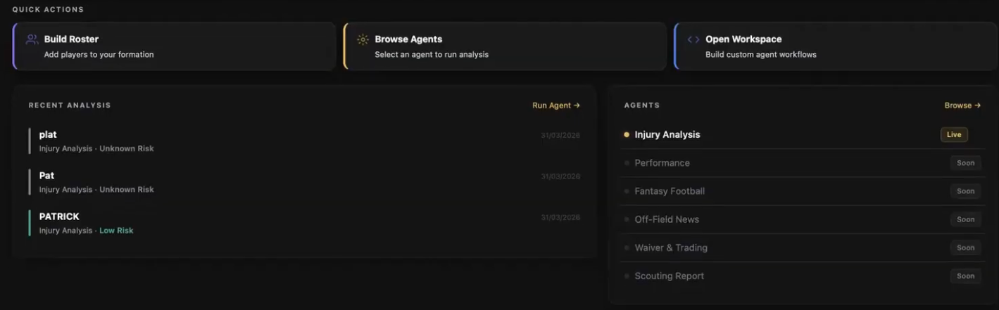
RotoWire AI Sports Multi-Agent Ecosystem
In collaboration with RotoWire · JHU SARG
Analysts across sports spend hours piecing together scattered data before making a single decision. I built and lead a multi-agent ecosystem — LLM orchestration, tool-use, and RAG — that automates injury analysis, scouting, waivers, and fantasy end-to-end. Now deployed to professional teams, analysts, and fans.
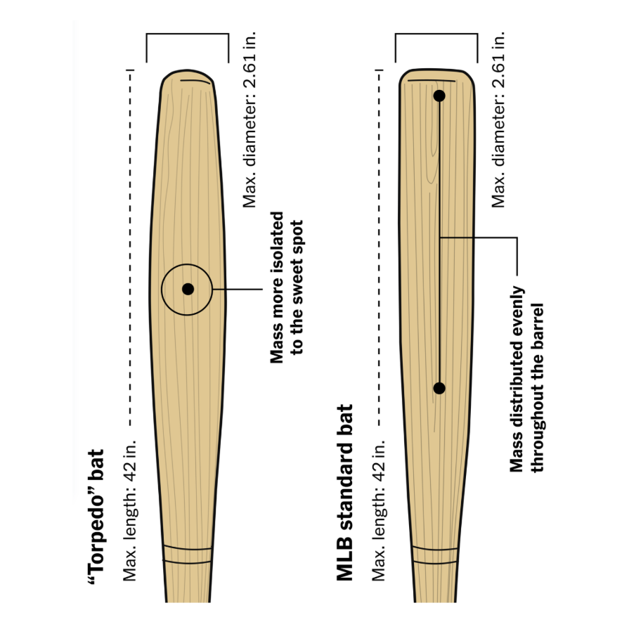
BatVision: Single-View Computer Vision Pipeline for Equipment Dimension Modeling and Quality Control
Baltimore Orioles · JHU SARG
MLB teams measure every bat by hand — slow, inconsistent, and unscalable. I built a phone-based pipeline for the Baltimore Orioles using segmentation, edge detection, and monocular geometry to extract full bat dimensions from a single image: sub-millimeter accuracy at 180x the speed of calipers. Filed as U.S. Provisional Patent.
Abstract Accepted — MIT SSAC 2026
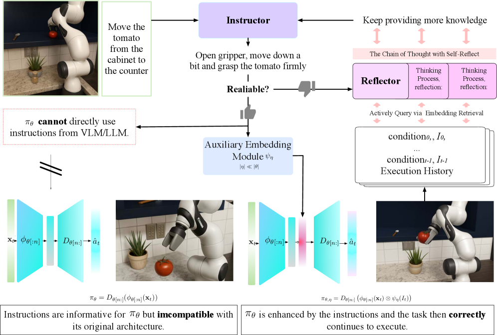
GUIDES: Guidance Using Instructor-Distilled Embeddings for Pre-trained Robot Policy Enhancement
JHU Intuitive Computing Lab
Retraining robot policies for every new task is expensive and brittle. GUIDES injects VLM-distilled embeddings into a policy's latent space at inference time, with an LLM Reflector that triggers re-planning when confidence drops — no retraining needed. +33.8% on transformer policies, +106% on diffusion policies, validated on a real UR5 arm.
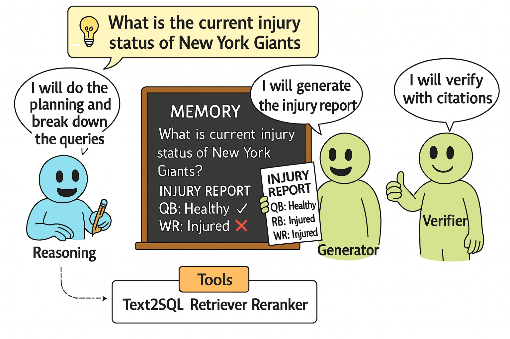
From Chaos to Clarity: How AI Can Transform News into Actionable Intelligence for NFL Front Offices
Supported by anonymous NFL teams and RotoWire · JHU SARG
NFL scouts manually track news on 2,000+ draft prospects — hours of work before a single decision. We built an agentic system using RAG, text-to-SQL, and a verifier agent that distills 40,000+ articles into cited, decision-ready intelligence with 80% top-1 retrieval accuracy. Now used by NFL front offices during draft prep.
Abstract Accepted — MIT SSAC 2026
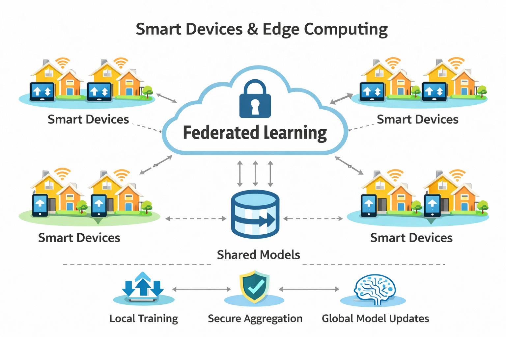
DecentraML: Privacy-Preserving Federated Learning Platform
Berkeley SkyDeck Batch 16
Enterprises want to train on each other's data without sharing it. I co-founded a federated learning platform using differential privacy and secure gradient aggregation so 50+ enterprises train across 10K+ edge devices with no data leaving the device. 3.5x faster convergence, 60% lower cost, backed by $100K in pre-seed funding.
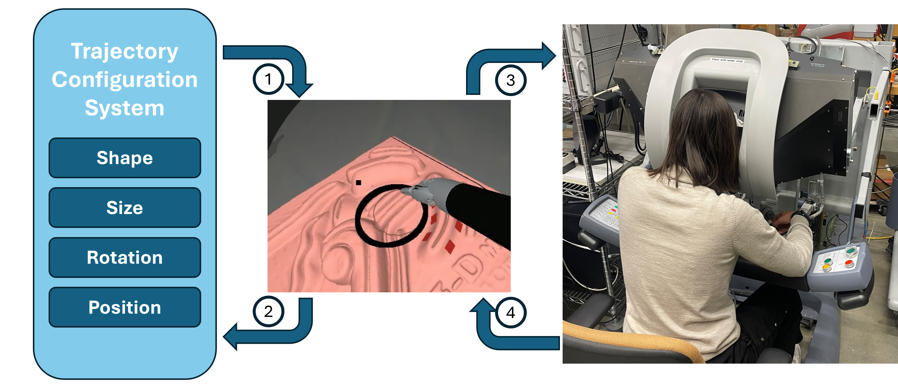
Adaptive Teleoperation Motion Scaling Based on Human Performance Characterization
JHU SMARTS Lab
Surgical teleop systems assume surgeons adapt instantly to motion scaling changes — they don't. Through 576 trials on the da Vinci Research Kit, we fit a power-law psychophysical model showing operators compensate only 20–43% of scaling shifts (R²>0.92), with a predictable 0.7s deceleration window at reversals — informing safer adaptive control design.
Submitted to IROS 2026
Investigating Cultural Bias in Vision-Language Models
JHU CLSP
Ask DALL-E to draw a "wedding" in English vs. Mandarin — you get very different images. We use CLIP-based embedding analysis and cross-lingual evaluation to quantify how prompt language and cultural framing systematically shift VLM outputs, measuring representational gaps across text-to-image generation to expose embedded biases.
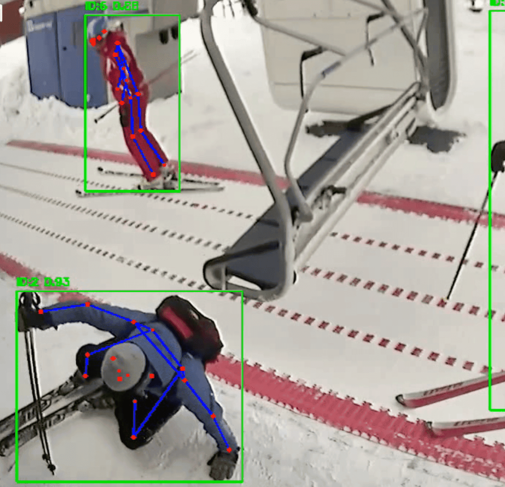
Vision-Based Aerial Ropeway Monitoring System
Vail · JHU SARG
Ski lift loading accidents injure hundreds yearly and cost resorts millions. We built a real-time system combining YOLO detection, multi-object tracking, and keypoint pose estimation to flag dangerous loading incidents as they happen — 95% tracking accuracy, with potential to save $20M+ annually across North American resorts.
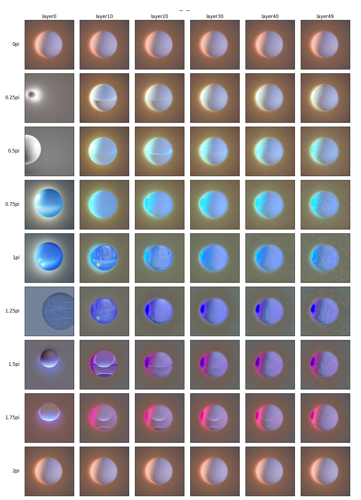
Network Bending of Diffusion Models for Audio-Visual Generation
UC Berkeley CNMAT
What if Stable Diffusion could listen to music? We applied network bending — injecting spectral audio features into the U-Net's intermediate layers — to generate audio-reactive videos in real time. Published at DAFx 2024 and debuted at a live Berkeley concert with human composers on stage.
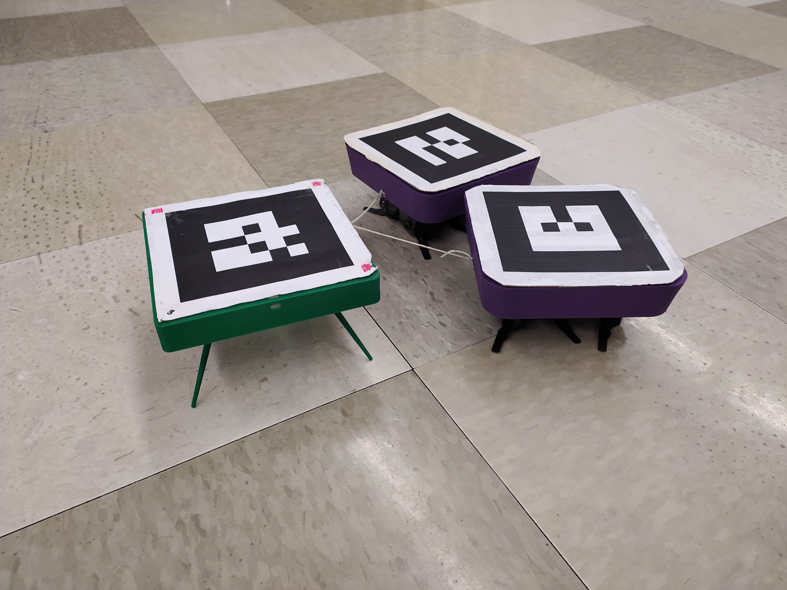
Model-Based Learning for Millirobot Cooperative Object Delivery
UC Berkeley Biomimetic Millisystems Lab
Multi-robot coordination usually demands thousands of training episodes. We taught pairs of Kamigami millirobots to cooperatively tow and push objects using a learned dynamics model with MPC — reaching 4cm accuracy from just 9 training samples, 100x more sample-efficient than RL baselines.
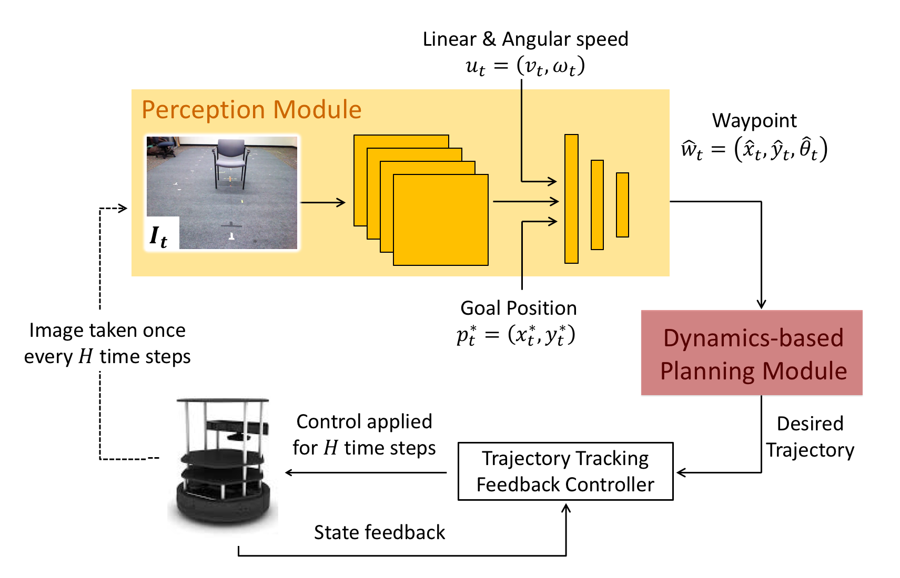
Learning-Based Waypoint Navigation
UC Berkeley BAIR
Autonomous robots struggle in unseen indoor spaces where pre-built maps don't exist. We combined imitation learning (DAgger-trained CNN) with visual SLAM and model-based planning — the learned policy picks waypoints while the planner handles obstacle avoidance, generalizing to novel environments without retraining.
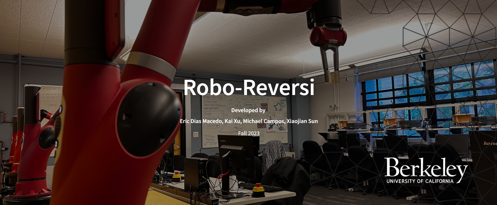
RoboReversi: Autonomous Game-Playing Robot
UC Berkeley EECS C106A
Most game-playing AI lives in software — we gave it a body. A Sawyer robot arm that perceives the board via AR-tag localization and vision-based detection, plans strategy with Alpha-Beta Pruning, and executes moves through collision-aware path planning with MoveIt.